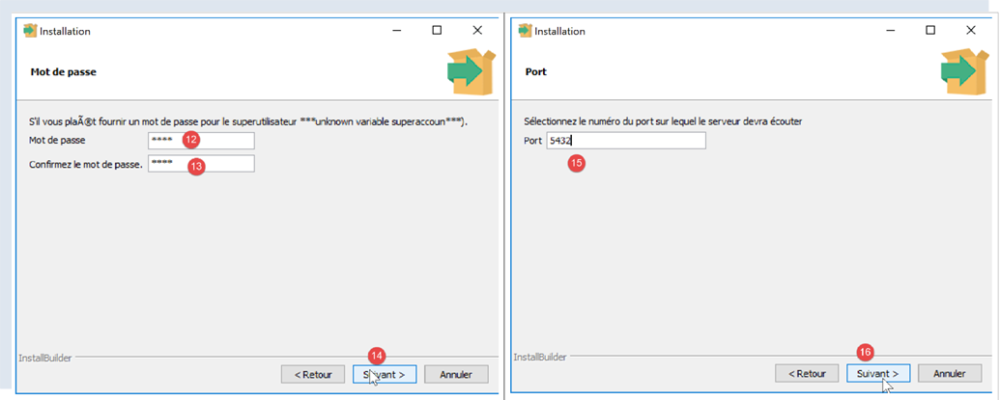
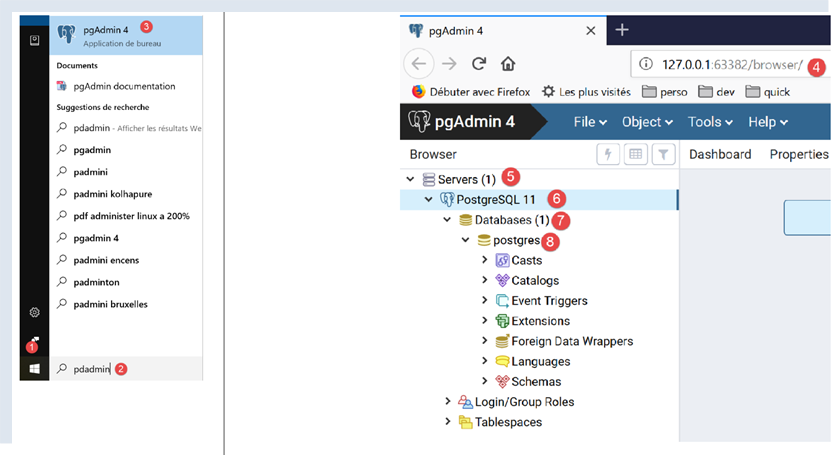
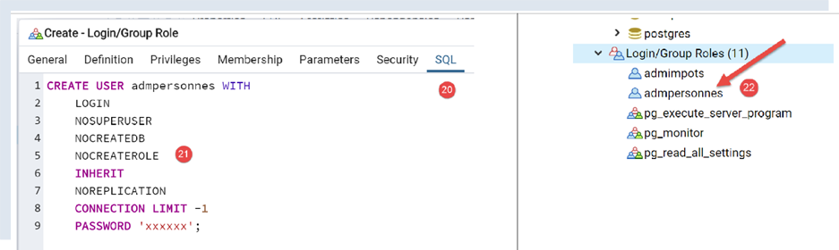

17. 使用 PostgreSQL 数据库管理系统
PostgreSQL 数据库管理系统可免费获取。它是 MySQL “社区版”的替代方案。
我们在此使用它，旨在演示将 Python/MySQL 脚本迁移到 Python/PostgreSQL 脚本是相当简单的。
在使用 MySQL 数据库管理系统时，我们的脚本架构如下：

在 PostgreSQL 数据库管理系统下，架构将如下所示：

17.1. 安装 PostgreSQL 数据库管理系统
PostgreSQL 数据库管理系统发行版可在 [https://www.postgresql.org/download/] 获取（2019 年 5 月）。以下演示 64 位 Windows 版本的安装过程：


- 在 [1-4] 中，下载 DBMS 安装程序；
运行下载的安装程序：

- 在 [6] 处，指定安装目录；

- 在 [8] 中，对于我们当前的操作，无需选择 [Stack Builder] 选项；
- 在 [10] 处，保留默认值；

- 在 [12-13] 处，我们在此输入了密码 [root]。这将是 DBMS 管理员（用户名为 [postgres]）的密码。PostgreSQL 也将此用户称为超级用户；
- 在 [15] 中，保留默认值：这是 DBMS 的监听端口；

- 在 [17] 中，保留默认值；
- 在 [19] 中，显示安装配置的摘要；


在 Windows 系统中，PostgreSQL 数据库管理系统会作为 Windows 服务安装并自动启动。大多数情况下，这并非理想状态。我们将修改此配置。在 Windows 搜索栏中输入 [services] [24-26]：

- 在 [29] 中，可以看到 PostgreSQL 数据库管理系统服务被设置为自动模式。通过访问服务属性 [30] 来更改此设置：

- 在 [31-32] 中，将启动类型设置为“手动”；
- 在 [33] 中，停止该服务；
若需手动启动数据库管理系统（DBMS），请返回 [services] 应用程序，右键单击 [postgresql] 服务（34），然后启动它（35）。
17.2. 使用 [pgAdmin] 工具管理 PostgreSQL
启动 PostgreSQL 数据库管理系统（DBMS）的 Windows 服务（参见上一段）。然后，以与启动 [服务] 工具相同的方式启动 [pgAdmin] 工具，该工具可用于管理 PostgreSQL 数据库管理系统 [1-3]：

系统可能会在某个时候提示您输入超级用户密码。超级用户名为 [postgres]。您在 DBMS 安装过程中设置了此密码。在本文档中，我们在安装过程中为超级用户设置了密码 [root]。
- 在 [4] 中，[pgAdmin] 是一个 Web 应用程序；
- 在 [5] 中，是 [pgAdmin] 检测到的 PostgreSQL 服务器列表，此处显示 1 台；
- 在 [6] 中，是我们启动的 PostgreSQL 服务器；
- 在 [7] 中，表示 DBMS 数据库，此处为 1；
- 在 [8] 中，[postgresql] 数据库由超级用户 [postgres] 管理；
首先，让我们创建一个用户 [admpersonnes]，密码为 [nobody]：


- 在 [17] 中，我们输入了 [nobody]；

- 在 [21] 中，[pgAdmin] 工具将向 PostgreSQL 数据库管理系统发送的 SQL 代码。这是学习 PostgreSQL 专有 SQL 语言的一种方式；
- 在 [22] 中，通过 [Save] 向导确认后，用户 [admpersonnes] 已创建；
现在我们创建 [dbpersonnes] 数据库：

右键单击 [23]，然后依次选择 [24-25] 创建新数据库。在 [26] 选项卡中，定义数据库名称 [27] 及其所有者 [admpersonnes] [28]。

- 在[30]中，显示了创建数据库的SQL代码；
- 在 [31] 中，通过向导点击 [保存] 后，数据库 [dbpersonnes] 即创建完成；
我们将使用 [dbpersonnes] 数据库配合 Python 脚本进行操作。
17.3. 安装 PostgreSQL 数据库管理系统（DBMS）的 Python 连接器
上图展示了一个将 Python 脚本与 PostgreSQL 数据库管理系统连接起来的连接器。目前有多种连接器可供选择。我们将安装 [psycopg2] 连接器。此操作在 Python 终端中进行（无论终端所在的目录为何）。使用命令 [pip install psycopg2] 安装该连接器：
(venv) C:\Data\st-2020\dev\python\cours-2020\python3-flask-2020\troiscouches\v01\tests>pip install psycopg2
Collecting psycopg2
Downloading psycopg2-2.8.5-cp38-cp38-win_amd64.whl (1.1 MB)
|| 1.1 MB 3.2 MB/s
Installing collected packages: psycopg2
Successfully installed psycopg2-2.8.5
17.4. 将 MySQL 脚本移植为 PostgreSQL 脚本

- 复制包含 MySQL 脚本的文件夹 [1]（Ctrl-C / Ctrl-V），然后将文件名更改为与内容相匹配；
17.4.1. [pgres_module]
此模块是 [mysql_module] 模块的副本（参见章节 |script [mysql-04]: 执行 SQL 命令文件|）。修改导入语句：
原代码：
我们写：
[display_info] 函数的签名是：
def afficher_infos(curseur: MySQLCursor):
现在变为：
def afficher_infos(curseur: cursor)
[execute_list_of_commands] 函数的签名是：
def execute_list_of_commands(connexion: MySQLConnection, sql_commands: list,
suivi: bool = False, arrêt: bool = True, with_transaction: bool = True)
现在变为：
def execute_list_of_commands(connexion: connection, sql_commands: list,
suivi: bool = False, arrêt: bool = True, with_transaction: bool = True):
除此之外，其他内容保持不变。
17.4.2. 脚本 [pgres_01]
[pgres_01] 脚本是 [mysql_01] 脚本的副本（参见章节 |script [mysql-01]: 连接到 MySQL 数据库 - 1|）。进行了以下更改：
原内容：
我们编写：
其余部分保持不变。结果与 MySQL 相同。
17.4.3. 脚本 [pgres_02]
[pgres_02] 脚本是 [mysql_02] 脚本的副本（参见章节 |script [mysql-02]: 连接到 MySQL 数据库 - 2|）。请进行以下修改：
将以下内容替换为：
我们写：
结果与 [mysql_02] 脚本的结果不一致：
[pgres_02] 脚本如下：
虽然第 36–41 行本应显示一条错误消息，指出与 DBMS 的连接失败，但实际上并未显示任何内容。事实上，经过进一步调查，我们发现代码确实进入了第 35–37 行的 [except] 代码块，但 [error] 变量被设置为 [None]。这种情况发生在 [psycopg2] 连接器的 2.8.4 版本中。
我们可以通过编写一条通用但不够精确的错误信息来解决此问题：
结果如下：
C:\Data\st-2020\dev\python\cours-2020\python3-flask-2020\venv\Scripts\python.exe C:/Data/st-2020/dev/python/cours-2020/python3-flask-2020/databases/postgresql/pgres_02.py
Connexion réussie à la base database=dbpersonnes, host=localhost sous l'identité user=admpersonnes, passwd=nobody
Déconnexion réussie
Erreur de connexion à la base [dbpersonnes] par l'utilisateur [xx/yy]
Process finished with exit code 0
17.4.4. 脚本 [pgres_03]
脚本 [pgres_03] 是脚本 [mysql_03] 的副本（参见章节 |脚本 [mysql-03]：创建 MySQL 表|）。对其进行了以下修改：
原代码如下：
from mysql.connector import DatabaseError, InterfaceError, connect
from mysql.connector.connection import MySQLConnection
我们写：
from psycopg2 import DatabaseError, InterfaceError, connect
from psycopg2.extensions import connection
此外，[execute_sql] 函数的签名原本是：
def execute_sql(connexion: MySQLConnection, update: str):
变为：
def execute_sql(connexion: connection, update: str):
其余部分保持不变。结果如下：
C:\Data\st-2020\dev\python\cours-2020\python3-flask-2020\venv\Scripts\python.exe C:/Data/st-2020/dev/python/cours-2020/python3-flask-2020/databases/postgresql/pgres_03.py
create table personnes (id int PRIMARY KEY, prenom varchar(30) NOT NULL, nom varchar(30) NOT NULL, age integer NOT NULL, unique(nom,prenom)) : requête réussie
Process finished with exit code 0
您可以使用 [pgAdmin] 管理工具验证 [people] 表是否存在：

17.4.5. 脚本 [pgres_04]
[pgres_04] 脚本是 [mysql_04] 脚本的副本（参见章节 |script [mysql-04]: 执行 SQL 命令文件|）。它使用 [pgres_module] 模块：
其余部分保持不变。
我们创建一个配置 [pgres pgres-04 without_transaction]，方法与章节 |script [mysql-04]: 执行 SQL 命令文件| 中所述相同。我们还创建了一个配置 [pgres pgres-04 with_transaction]。
执行 [pgres pgres-04 without_transaction] 配置将产生以下结果：
C:\Data\st-2020\dev\python\cours-2020\python3-flask-2020\venv\Scripts\python.exe C:/Data/st-2020/dev/python/cours-2020/python3-flask-2020/databases/postgresql/pgres_04.py false
--------------------------------------------------------------------
Exécution du fichier SQL C:\Data\st-2020\dev\python\cours-2020\python3-flask-2020\databases\postgresql/data/commandes.sql sans transaction
--------------------------------------------------------------------
[drop table if exists personnes] : Exécution réussie
nombre de lignes modifiées : -1
[create table personnes (id int primary key, prenom varchar(30) not null, nom varchar(30) not null, age integer not null, unique (nom,prenom))] : Exécution réussie
nombre de lignes modifiées : -1
[insert into personnes(id, prenom, nom, age) values(1, 'Paul','Langevin',48)] : Exécution réussie
nombre de lignes modifiées : 1
[insert into personnes(id, prenom, nom, age) values (2, 'Sylvie','Lefur',70)] : Exécution réussie
nombre de lignes modifiées : 1
[select prenom, nom, age from personnes] : Exécution réussie
prenom, nom, age,
*****************
('Paul', 'Langevin', 48)
('Sylvie', 'Lefur', 70)
*****************
xx : Erreur (ERREUR: erreur de syntaxe sur ou près de « xx »
LINE 1: xx
^
)
[insert into personnes(id, prenom, nom, age) values (3, 'Pierre','Nicazou',35)] : Exécution réussie
nombre de lignes modifiées : 1
[insert into personnes(id, prenom, nom, age) values (4, 'Geraldine','Colou',26)] : Exécution réussie
nombre de lignes modifiées : 1
[insert into personnes(id, prenom, nom, age) values (5, 'Paulette','Girond',56)] : Exécution réussie
nombre de lignes modifiées : 1
[select prenom, nom, age from personnes] : Exécution réussie
prenom, nom, age,
*****************
('Paul', 'Langevin', 48)
('Sylvie', 'Lefur', 70)
('Pierre', 'Nicazou', 35)
('Geraldine', 'Colou', 26)
('Paulette', 'Girond', 56)
*****************
[select nom,prenom from personnes order by nom asc, prenom desc] : Exécution réussie
nom, prenom,
************
('Colou', 'Geraldine')
('Girond', 'Paulette')
('Langevin', 'Paul')
('Lefur', 'Sylvie')
('Nicazou', 'Pierre')
************
[select nom,prenom,age from personnes where age between 20 and 40 order by age desc, nom asc, prenom asc] : Exécution réussie
nom, prenom, age,
*****************
('Nicazou', 'Pierre', 35)
('Colou', 'Geraldine', 26)
*****************
[insert into personnes(id, prenom, nom, age) values(6, 'Josette','Bruneau',46)] : Exécution réussie
nombre de lignes modifiées : 1
[update personnes set age=47 where nom='Bruneau'] : Exécution réussie
nombre de lignes modifiées : 1
[select nom,prenom,age from personnes where nom='Bruneau'] : Exécution réussie
nom, prenom, age,
*****************
('Bruneau', 'Josette', 47)
*****************
[delete from personnes where nom='Bruneau'] : Exécution réussie
nombre de lignes modifiées : 1
[select nom,prenom,age from personnes where nom='Bruneau'] : Exécution réussie
nom, prenom, age,
*****************
*****************
--------------------------------------------------------------------
Exécution terminée
--------------------------------------------------------------------
Il y a eu 1 erreur(s)
xx : Erreur (ERREUR: erreur de syntaxe sur ou près de « xx »
LINE 1: xx
^
)
Process finished with exit code 0
- 第 5 行：我们不得不修改命令以删除 [people] 表。与 MySQL 连接器不同，如果要删除的表不存在，PostgreSQL 连接器会抛出异常。[drop table] 命令有一个变体 [drop table if exists]，如果表不存在，它不会抛出异常。我们在此使用了该命令。这是一个两个数据库管理系统在类似情况下行为不一致的示例；
[pgAdmin] 工具中的 [people] 表如下所示：

运行配置 [pgres pgres_04 with_transaction] 会得到以下结果：
C:\Data\st-2020\dev\python\cours-2020\python3-flask-2020\venv\Scripts\python.exe C:/Data/st-2020/dev/python/cours-2020/python3-flask-2020/databases/postgresql/pgres_04.py true
--------------------------------------------------------------------
Exécution du fichier SQL C:\Data\st-2020\dev\python\cours-2020\python3-flask-2020\databases\postgresql/data/commandes.sql avec transaction
--------------------------------------------------------------------
[drop table if exists personnes] : Exécution réussie
nombre de lignes modifiées : -1
[create table personnes (id int primary key, prenom varchar(30) not null, nom varchar(30) not null, age integer not null, unique (nom,prenom))] : Exécution réussie
nombre de lignes modifiées : -1
[insert into personnes(id, prenom, nom, age) values(1, 'Paul','Langevin',48)] : Exécution réussie
nombre de lignes modifiées : 1
[insert into personnes(id, prenom, nom, age) values (2, 'Sylvie','Lefur',70)] : Exécution réussie
nombre de lignes modifiées : 1
[select prenom, nom, age from personnes] : Exécution réussie
prenom, nom, age,
*****************
('Paul', 'Langevin', 48)
('Sylvie', 'Lefur', 70)
*****************
xx : Erreur (ERREUR: erreur de syntaxe sur ou près de « xx »
LINE 1: xx
^
)
--------------------------------------------------------------------
Exécution terminée
--------------------------------------------------------------------
Il y a eu 1 erreur(s)
xx : Erreur (ERREUR: erreur de syntaxe sur ou près de « xx »
LINE 1: xx
^
)
Process finished with exit code 0
[pgAdmin] 工具中的 [people] 表如下：

此处的结果与使用 MySQL 时获得的结果不同。如果我们在相同条件下运行脚本——即在不使用事务的情况下运行脚本——则会得到以下结果：
- 在 MySQL 中，[people] 表为空；
- 而在 PostgreSQL 中，[people] 表并非空表；
差异在于这两个数据库管理系统回滚事务的方式不同：
- MySQL 不会回滚 [drop table] 和 [create table] 命令。最终 [people] 表为空；
- PostgreSQL 会回滚 [drop table] 和 [create table] 命令。该表将恢复到脚本通过事务执行之前的状态；
17.4.6. 脚本 [pgres_05]
脚本 [pgres_05] 是脚本 [mysql_05] 的副本（参见章节 |脚本 [mysql-05]：使用参数化查询|）。该脚本的修改如下：
原代码：
我们写：
其余部分保持不变。
在 [pgAdmin] 中获得的结果如下：

17.5. 结论
将 MySQL 脚本移植到 PostgreSQL 脚本相对容易。但这属于特例。这两个数据库管理系统（DBMS）对 SQL 对象（数据库、表、列、约束、数据类型等）的命名约定不一致，且 SQL 扩展也不兼容……为了确保移植过程简单，必须在两种情况下都遵守 SQL 标准，而不要尝试使用数据库管理系统的专有扩展。但这会以性能为代价。